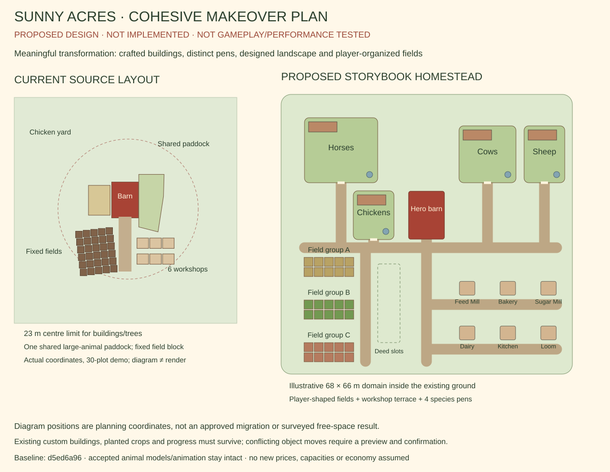
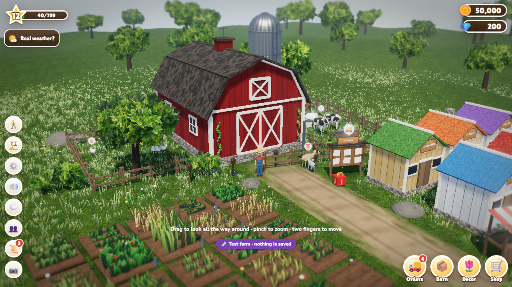
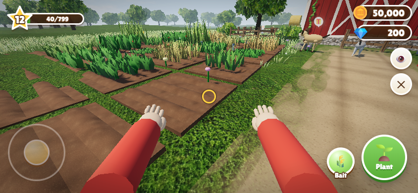

Sunny Acres: a complete makeover, with layout freedom
Proposed design — not implemented or tested. The diagrams below explain the intended layout change. Actual baseline screenshots show the unchanged published game; they do not show a makeover candidate. No object positions, animal models, crop states or saved progress have been changed.

Actual current baseline — Classic

Actual current baseline — Walk

Full proposal, migration design and acceptance gates · Exact-source feasibility evidence